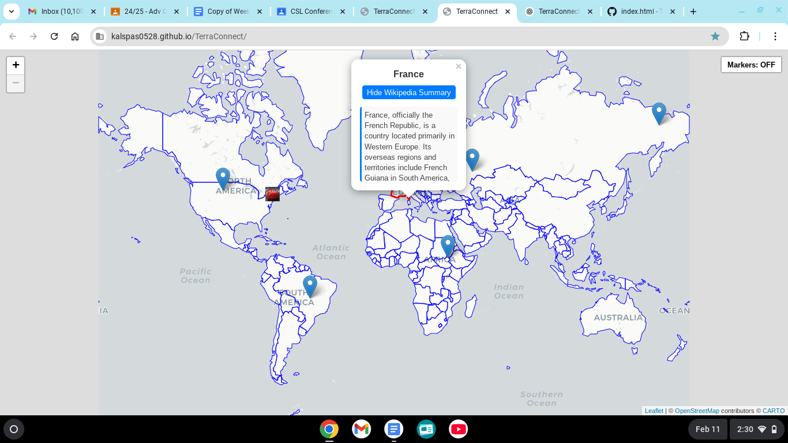

What Features Currently Exist?
- Interactive world map built with Leaflet.js.
- Each country displays its Wikipedia summary when clicked.
- Basic UI and navigation elements are in place.
What Still Needs to be Done?
- Implement a dynamic news-fetching feature.
- Optimize map performance and UI responsiveness.
- Decide on the best approach for integrating live news.
Known Challenges & Roadblocks:
- News Integration: Choosing between a paid News API, web scraping, or using RSS feeds.
• News API: Offers comprehensive data but is cost-prohibitive.
• Web Scraping: Might slow down the experience when a country is clicked.
• RSS Feeds: Appear to be a promising, lightweight option, but require further testing.
Visual Snapshot:

Summary: TerraConnect has laid a solid foundation by establishing an interactive map with Leaflet.js. When a country is clicked, its Wikipedia summary appears, offering quick background information. The next major milestone is integrating live news feeds.
News Integration Challenge: Deciding on the most efficient method to fetch live news:
Explore the interactive map on the homepage to see the current functionality, including country-specific Wikipedia popups.
Upcoming development plans include:
Objective: Build an interactive world map that provides access to global news.
Main Challenges: Efficiently integrating live news feeds without sacrificing performance.
Technologies: Leaflet.js for mapping; potential news integration via RSS feeds, web scraping, or a paid News API.
AI is being used to:
For the complete codebase and updates, visit the project on GitHub.